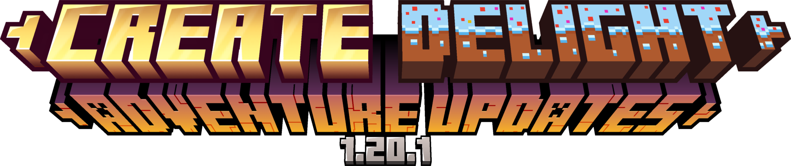

介绍
查看仓库 README 获取整合包介绍、安装步骤和社区入口。
最新构建
测试版与正式版均通过 GitHub Releases 分发。
模组地图
打开 模组分类浏览页，快速了解当前整合包包含的模组类型。
反馈问题
遇到崩溃、配方或任务问题时，请通过 Issues 提交复现信息。

Minecraft 1.20.1 Forge 深度魔改整合包，围绕机械动力、农夫乐事、任务引导和大规模 KubeJS 配方重构展开。


查看仓库 README 获取整合包介绍、安装步骤和社区入口。
测试版与正式版均通过 GitHub Releases 分发。
打开 模组分类浏览页，快速了解当前整合包包含的模组类型。
遇到崩溃、配方或任务问题时，请通过 Issues 提交复现信息。